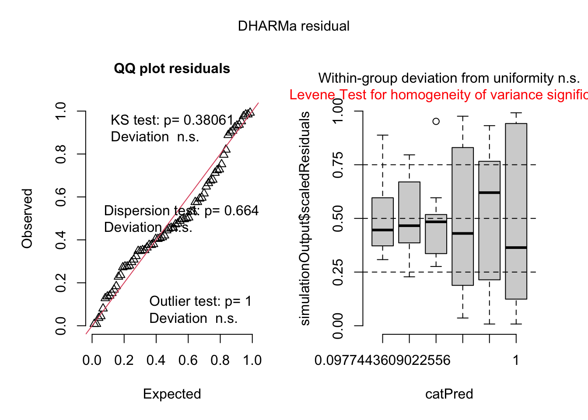
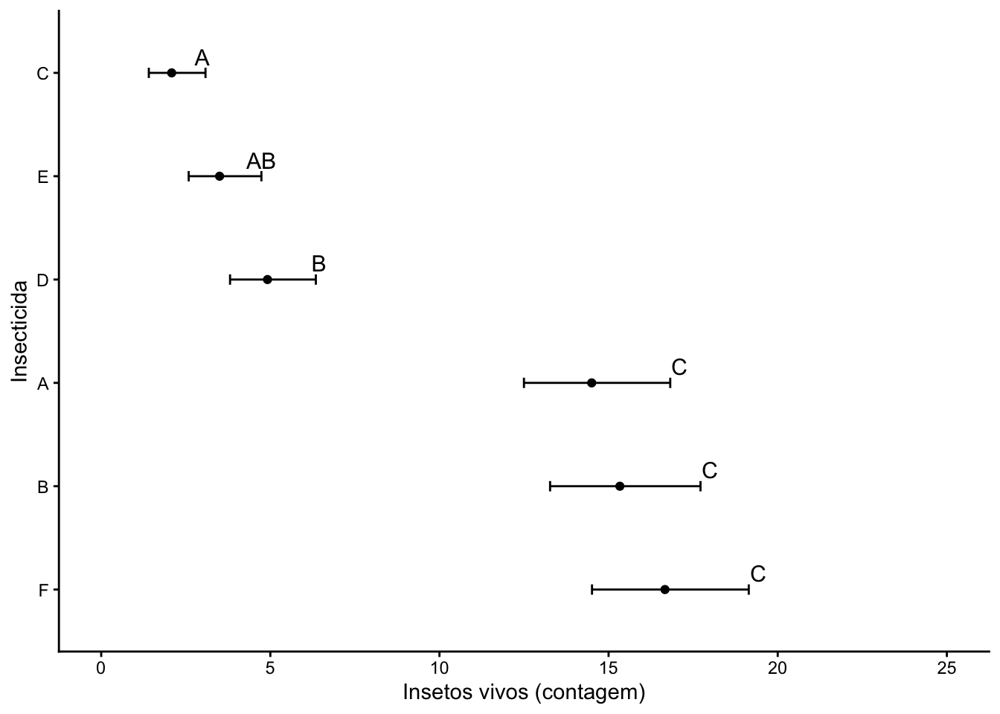

── Attaching core tidyverse packages ──────────────────────── tidyverse 2.0.0 ──
✔ dplyr 1.2.0 ✔ readr 2.2.0
✔ forcats 1.0.1 ✔ stringr 1.6.0
✔ ggplot2 4.0.2 ✔ tibble 3.3.1
✔ lubridate 1.9.5 ✔ tidyr 1.3.2
✔ purrr 1.2.1
── Conflicts ────────────────────────────────────────── tidyverse_conflicts() ──
✖ dplyr::filter() masks stats::filter()
✖ dplyr::lag() masks stats::lag()
ℹ Use the conflicted package (<http://conflicted.r-lib.org/>) to force all conflicts to become errors
insetos
count spray
1 10 A
2 7 A
3 20 A
4 14 A
5 14 A
6 12 A
7 10 A
8 23 A
9 17 A
10 20 A
11 14 A
12 13 A
13 11 B
14 17 B
15 21 B
16 11 B
17 16 B
18 14 B
19 17 B
20 17 B
21 19 B
22 21 B
23 7 B
24 13 B
25 0 C
26 1 C
27 7 C
28 2 C
29 3 C
30 1 C
31 2 C
32 1 C
33 3 C
34 0 C
35 1 C
36 4 C
37 3 D
38 5 D
39 12 D
40 6 D
41 4 D
42 3 D
43 5 D
44 5 D
45 5 D
46 5 D
47 2 D
48 4 D
49 3 E
50 5 E
51 3 E
52 5 E
53 3 E
54 6 E
55 1 E
56 1 E
57 3 E
58 2 E
59 6 E
60 4 E
61 11 F
62 9 F
63 15 F
64 22 F
65 15 F
66 16 F
67 13 F
68 10 F
69 26 F
70 26 F
71 24 F
72 13 F
### perguntar ao gemini o que fazer em seguida já que check_normality(m1) e check_heteroscedasticity(m1) deu negativo. #### O que é um teste nao parametrico/ Quando usar???kruskal.test(count ~ spray, data = insetos)
Kruskal-Wallis rank sum test
data: count by spray
Kruskal-Wallis chi-squared = 54.691, df = 5, p-value = 1.511e-10
### p-valor muito peque então rejeitamos H0.library(DHARMa) ###Pacote que simula residuos
This is DHARMa 0.4.7. For overview type '?DHARMa'. For recent changes, type news(package = 'DHARMa')
plot(simulateResiduals(m1))

### de acordo com os graficos eu tenho que seguir com os testes nao parametricos. Preciso tranformar os dados(de contagem) - perguntar ao chat o que fazer.insetos$count
spray emmean SE df lower.CL upper.CL
A 14.50 1.13 66 12.240 16.76
B 15.33 1.13 66 13.073 17.59
C 2.08 1.13 66 -0.177 4.34
D 4.92 1.13 66 2.656 7.18
E 3.50 1.13 66 1.240 5.76
F 16.67 1.13 66 14.406 18.93
Confidence level used: 0.95
medias2 <-emmeans(m2, ~spray, type ="response")medias2
spray response SE df lower.CL upper.CL
A 14.14 1.360 66 11.550 17.00
B 15.03 1.410 66 12.352 17.97
C 1.55 0.452 66 0.779 2.58
D 4.68 0.785 66 3.248 6.38
E 3.27 0.656 66 2.095 4.72
F 16.15 1.460 66 13.370 19.19
Confidence level used: 0.95
Intervals are back-transformed from the sqrt scale
library(multcomp)
Loading required package: mvtnorm
Loading required package: survival
Loading required package: TH.data
Loading required package: MASS
Attaching package: 'MASS'
The following object is masked from 'package:dplyr':
select
Attaching package: 'TH.data'
The following object is masked from 'package:MASS':
geyser
cld(medias2, Letters = LETTERS)
spray response SE df lower.CL upper.CL .group
C 1.55 0.452 66 0.779 2.58 A
E 3.27 0.656 66 2.095 4.72 AB
D 4.68 0.785 66 3.248 6.38 B
A 14.14 1.360 66 11.550 17.00 C
B 15.03 1.410 66 12.352 17.97 C
F 16.15 1.460 66 13.370 19.19 C
Confidence level used: 0.95
Intervals are back-transformed from the sqrt scale
Note: contrasts are still on the sqrt scale. Consider using
regrid() if you want contrasts of back-transformed estimates.
P value adjustment: tukey method for comparing a family of 6 estimates
significance level used: alpha = 0.05
NOTE: If two or more means share the same grouping symbol,
then we cannot show them to be different.
But we also did not show them to be the same.
$statistics
Chisq Df p.chisq t.value MSD
54.69134 5 1.510845e-10 3.045792 12.91015
$parameters
test p.ajusted name.t ntr alpha
Kruskal-Wallis bonferroni insetos$spray 6 0.05
$means
insetos.count rank std r Min Max Q25 Q50 Q75
A 14.500000 52.16667 4.719399 12 7 23 11.50 14.0 17.75
B 15.333333 54.83333 4.271115 12 7 21 12.50 16.5 17.50
C 2.083333 11.45833 1.975225 12 0 7 1.00 1.5 3.00
D 4.916667 25.58333 2.503028 12 2 12 3.75 5.0 5.00
E 3.500000 19.33333 1.732051 12 1 6 2.75 3.0 5.00
F 16.666667 55.62500 6.213378 12 9 26 12.50 15.0 22.50
$comparison
NULL
$groups
insetos$count groups
F 55.62500 a
B 54.83333 a
A 52.16667 a
D 25.58333 b
E 19.33333 bc
C 11.45833 c
attr(,"class")
[1] "group"
### terceira via GLM com a função de ligação### Modelo linear generalisado para dado de contagem usando Poissonm3 <-glm(count ~ spray, family =poisson(link ="log"), data = insetos)anova(m3)
spray rate SE df asymp.LCL asymp.UCL .group
C 2.08 0.417 Inf 1.41 3.08 1
E 3.50 0.540 Inf 2.59 4.74 12
D 4.92 0.640 Inf 3.81 6.35 2
A 14.50 1.100 Inf 12.50 16.82 3
B 15.33 1.130 Inf 13.27 17.72 3
F 16.67 1.180 Inf 14.51 19.14 3
Confidence level used: 0.95
Intervals are back-transformed from the log scale
P value adjustment: tukey method for comparing a family of 6 estimates
Tests are performed on the log scale
significance level used: alpha = 0.05
NOTE: If two or more means share the same grouping symbol,
then we cannot show them to be different.
But we also did not show them to be the same.
### como o valor deu igual vc usa o glm pq é mais moderno, mais correto, mais elegante.df3 <-cld(emmeans(m3, ~ spray, type ="response"),Letters = LETTERS)df3 %>%ggplot(aes(x =reorder(spray, -rate), y =rate, label = .group)) +geom_point() +geom_errorbar(aes(ymin = asymp.LCL,ymax = asymp.UCL),width =0.1) +geom_text(aes( y = asymp.UCL),vjust =-0.5,size =4) +ylim(0, 25)+theme_classic()+labs( x ="Insecticida",y ="Insetos vivos (contagem)")+coord_flip()

Parte 2 da aula
Como montar um website.
###Primeiro orgazine a aula 5. No Gemini: organize e comente o meu codigo quarto markdown. Quero um arquivo unico, sem separação, para download.
#### Versão do CHAT
title: “Aula 5 - ANOVA e Alternativas para Dados de Contagem” format: html editor: visual —